01 · 日常状态
安静待机
轻轻呼吸，保持原本身形。
自定义桌宠petforge 是我做的开源桌宠小工具。有透明 PNG 就直接导入，再调大小和行动习惯；普通照片也可以在本机抠图，然后预览、保存并启动桌宠。
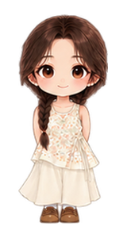
这就是制作下方卡通女孩时使用的本人参考照片。双麻花辫、碎花上衣、浅色长裤与棕色鞋子，都成为同一角色的设计参考。
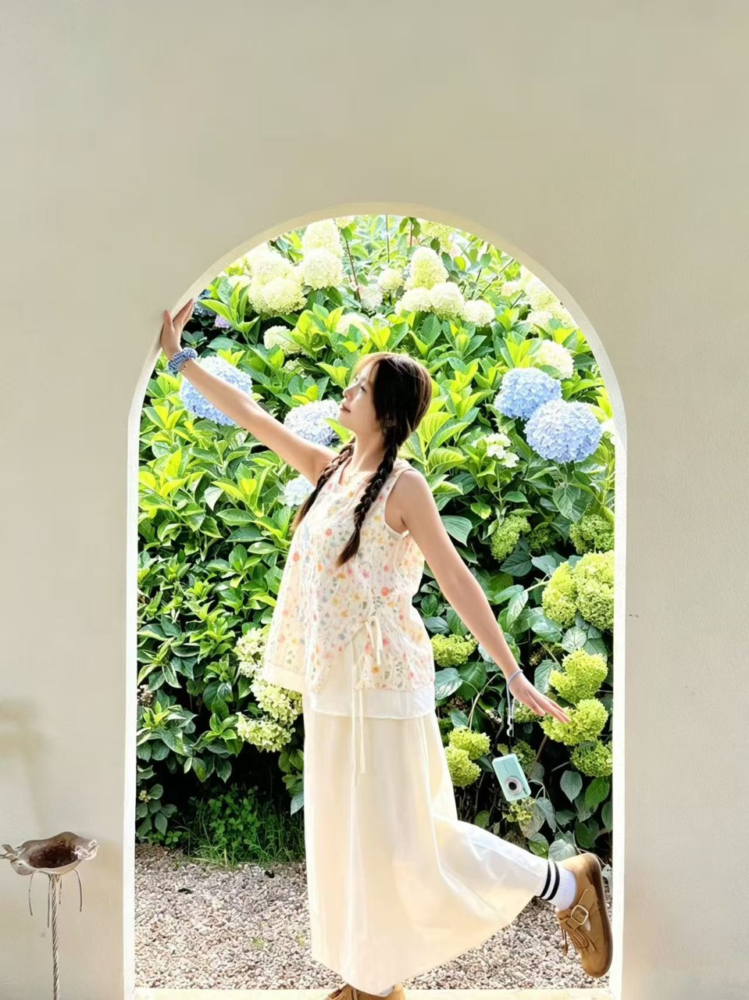
网站展示、桌面运行器内置样例与动作预览使用的是同一套本人定制素材。成果经过人工设计与多轮调整；上传任意照片目前不会自动生成同等精细的形象与动作。
看看这个角色的动作 ↓可以先在这里预览照片并保存参考文件。真正制作桌宠时，透明 PNG 可直接导入；普通照片会在本机抠背景。这个公开网页不会替你生成卡通形象或启动桌面宠物。
上面的参考照片只在浏览器临时预览。下方可以直接制作透明 PNG 桌宠；普通照片抠图需要运行本机创作器。
项目提供开发版源码。按 Windows 安装说明准备 Node.js、Python 和 Godot。启动后，导入透明角色 PNG；或者保存本页参考文件，再在本机创作器里选择照片路线。
Copy-Item .env.example .env .\scripts\setup.ps1 pnpm dev
已有透明角色图？在这里生成桌宠文件，再放入 Windows 便携版文件夹运行。图片只在浏览器处理，不会上传。
先选择一张带透明背景的 PNG。
使用步骤：① 下载 Windows 便携版并解压；② 将这里下载的 ZIP 解压到便携版同一文件夹；③ 双击新出现的 Start-Custom-Pet.bat。
新角色使用通用桌面动作；示例女孩的精细动作需要针对新角色另行制作。普通照片请先抠图，本页不自动生成卡通形象。
这套定制角色动作素材共 18 种，涵盖待机、移动和互动。上方三段动画来自 Godot 桌面运行器，按 60 FPS 原速渲染；上传其他照片不会自动获得这套专属动作。
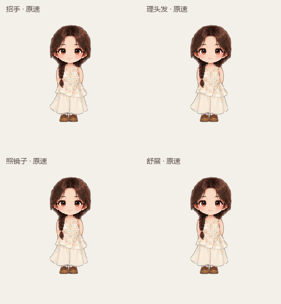
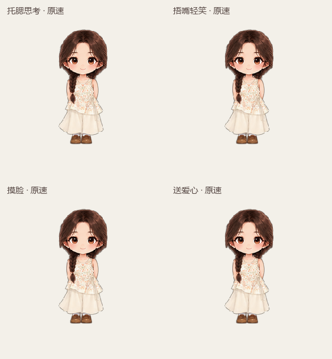
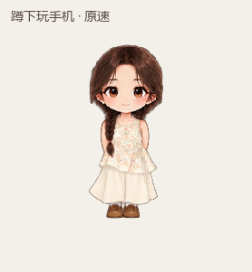
轻轻呼吸，保持原本身形。
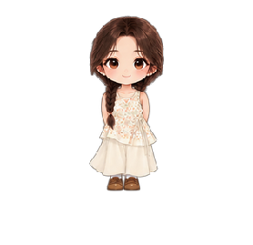
安静站立，目光稍作变化。
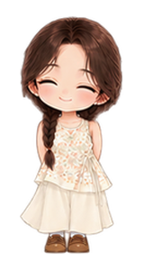
轻轻闭眼，再自然睁开。
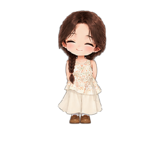
休息时进入睡姿，并显示 Zzz。

沿桌面向左移动。
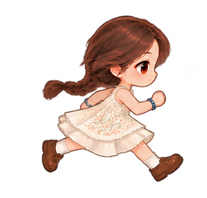
沿桌面向右移动。
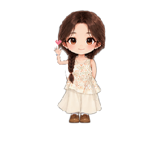
抬手问候时，手旁飘出一颗小爱心。
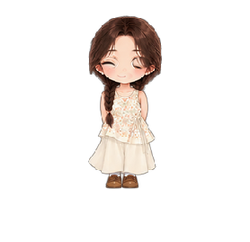
用轻松表情回应互动。
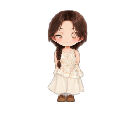
轻轻鞠躬，再回到站姿。
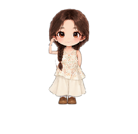
抬手理顺头发，再自然收手。
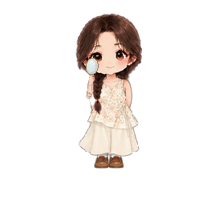
举起小镜子，视线跟随镜面。
托住脸颊，安静想一想。
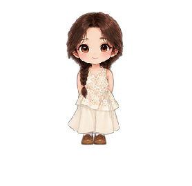
轻轻转动视线，看看周围。
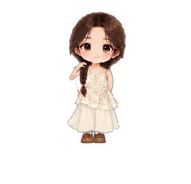
手从脸侧靠近，轻轻触碰脸颊。
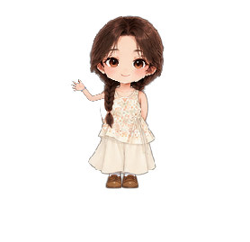
伸展身体，再慢慢放下手臂。
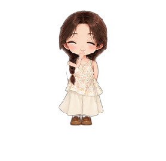
轻轻遮住嘴角，眼神随之变化。
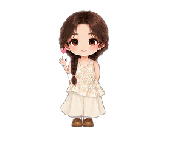
抬手送出一颗小爱心。
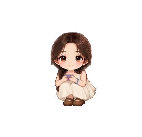
停留看屏幕，点按几次并滑动。
自定义桌宠petforge 正在搭建一条本地创作流程：图片处理、形象预览、桌面运行各自独立，便于用户在生成后确认和修整。
在本地网页编辑器里上传图片。默认开发流程把原图和生成文件保存在自己的电脑。
查看透明角色与已有动作，再继续调整角色外观和动作素材。任意照片的自动拆分与绑骨仍在规划中。
Godot 桌面运行时支持透明窗口、拖动与屏幕内移动，可独立于编辑器显示。
仓库里有本机网页编辑器、图片处理服务、桌宠配置格式和 Godot 透明桌面运行器。透明 PNG 可以直接成为桌宠；名字、大小、移动、休息和窗口行为都能自己调。
普通照片可以本机抠图和轻量滤镜，但不会自动变成展示里的卡通女孩。网页上 18 个动作是我的定制角色作品；其他角色目前使用通用运行器动作。自动卡通重绘和照片专属动作仍在尝试。
我把可以运行的 Windows 桌宠、介绍网页和我修改后的产品提案整理成一份资料包。你可以先看动作，再下载体验；提案提供 PDF 阅读版和可编辑 Word 版。
下载并解压完整资料包，在“桌面Demo”文件夹双击 Start-PetForge.bat。Windows 便携运行器已包含在包里。
提案写了需求洞察、产品思维导图、PRD、动作验收、低保真原型和迭代路线。
在线介绍页展示真人原图对照、18 个作品动作和动画预览；也能查看项目源码与自定义说明。
我先把透明角色导入、外观和行为调整、资源导出及 Windows 桌面运行这条路做好。中英文说明都有安装步骤，也写了照片抠图的限制和常见问题。